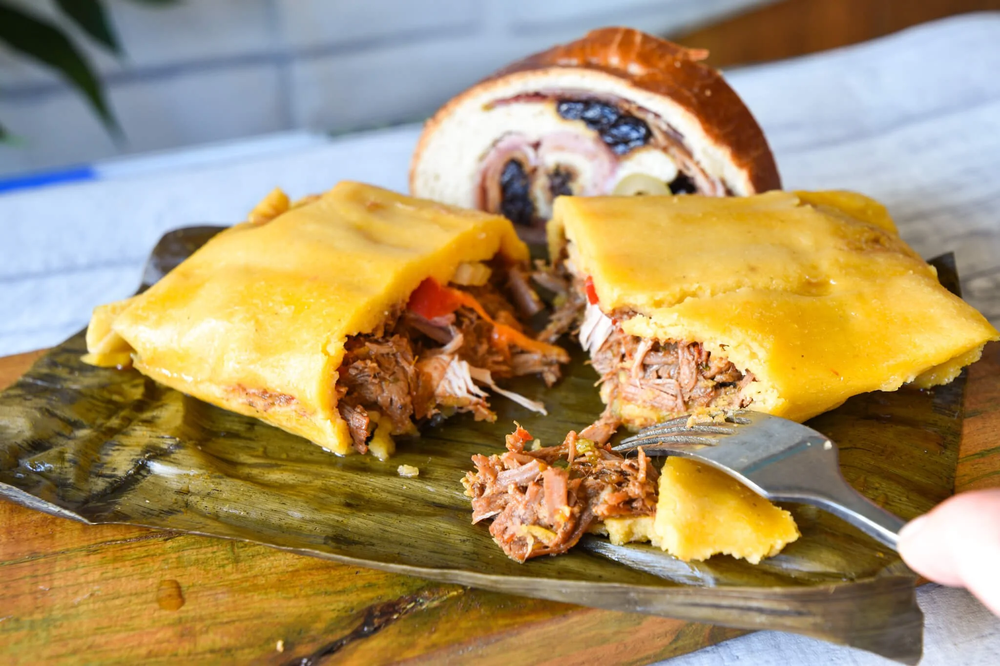

Hallaca Plato navideño
El origen de la hallaca es motivo de diversas teorías y leyendas. Una de las narrativas más populares se remonta a los años de la revolución de independencia. Se dice que durante las festividades navideñas, las familias adineradas venezolanas solían preparar opulentos banquetes el 24 de diciembre. Al día siguiente, las sobras de estos banquetes eran entregadas a los esclavos, quienes las aprovechaban mezclándolas con masa de maíz y envolviéndolas en hojas de plátano para ser cocidas. De esta práctica habría surgido la receta tradicional de la hallaca. Los esclavos negros e indígenas preparaban el plato con las sobras de comida que dejaban sus amos, y se preparaba más que todo en los campos de recolección de cacao, maíz y plátano. Después del festín de los amos blancos, los esclavos negros y los indígenas se reunían alrededor de fogatas, juntaban las sobras de comida, hacían un guiso y lo envolvían en hojas de plátano ahumadas, siendo esto un símbolo de unión en común entre las razas.]